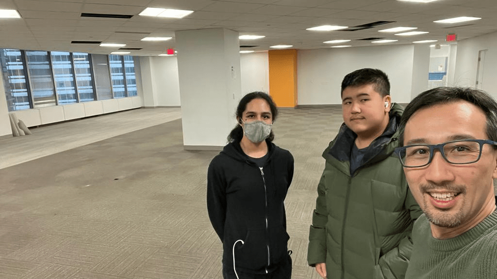
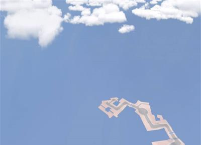

My Work
Publicis Media Co-op
During my first semester of grade 11, I took a co-op as an IT assistant at one of the largest advertising companies in the world, Publicis Media. Over the duration of my placement I helped image and organize the group's computer systems.
3D Mapping
Recently I have made ports of Overwatch maps in the game Trackmania2020, pictured above is the map Dorado. The models are datamined from overwatch itself, but I had to remake the textures, placement, sizing and UV mapping for each section of track. Thus far I only have the basic routes, but i'm looking to include more of the original scenery in future projects. Messing with 3D modeling is something I enjoy, and mapping is my favourite application of the skill.
Visual Effects
I also enjoy visual effects, recently I played with the idea of making my microwave at home look like a smart microwave for my english culminating as a hook. I am rather proud of the results. My video editor of choice is Sony Vegas Pro (19)
Blanking
Blanking is a project by Delilah Adams and Tete Soto (thats me!) It is a yet another scrabble clone, but this one combines the best that all of them have to offer. Even including challenges, a feature of tournament scrabble that is missing from most online variations.

The creation of Blanking was rather fun. It uses a matrix to store the board data, and a collection of clever arrays to handle things like the tile bag, the tile rack, and even the bonuses!